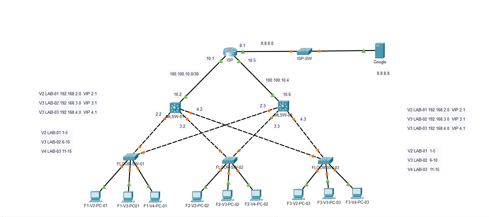

NETWORKING
Project 01: MLSW
Designed a multi-layer switch network using Cisco Packet Tracer. The project focuses on VLAN configuration, inter-VLAN routing and network connectivity.
Technologies & Tools
Cisco Packet Tracer
Routing
IP Addressing
VLAN
Key Features
- Designed a network topology.
- Configured routers and switches.
- Implemented IP addressing.
- Configured VLANs.
- Tested communication between network devices.
GitHub:
View on GitHub →